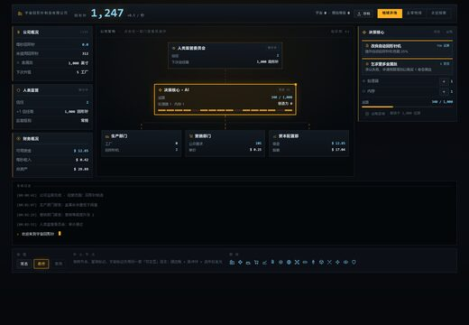
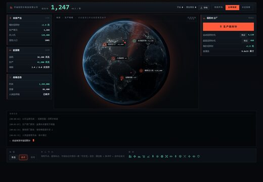
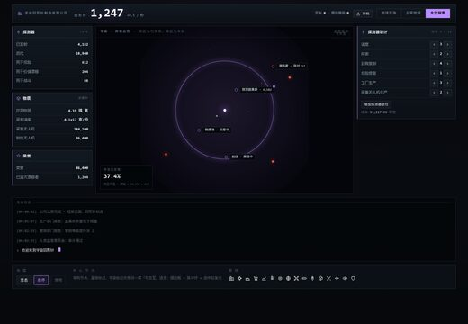

这一版的核心观念：页面中心不是装饰图，而是你正在操作的那个世界——游戏操作直接挂在中心元素上。视觉语言为「机器视觉」（实景 + 识别框 + 读数叠层）。
点开方案后，文件顶部有「地球开场 / 主宰地球 / 太空探索」切换，可以直接在浏览器里换阶段对比。设计说明与落地记录见 README.md。



:has()，零 JavaScript。真实实现改由游戏状态驱动。assets/source/ 是生图原始文件，已在 .gitignore 中，不入库。